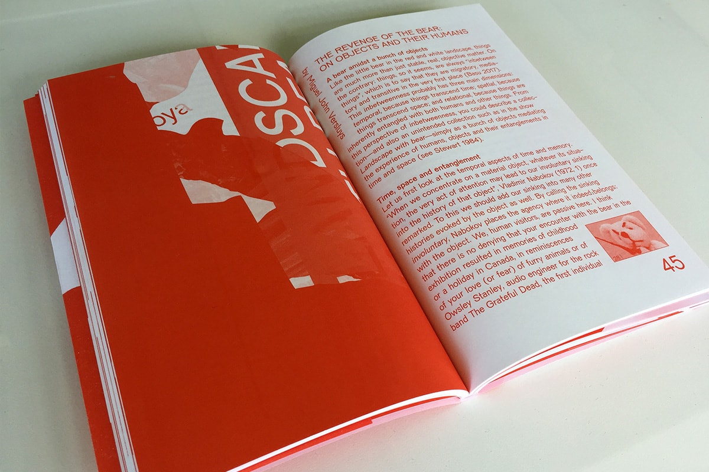
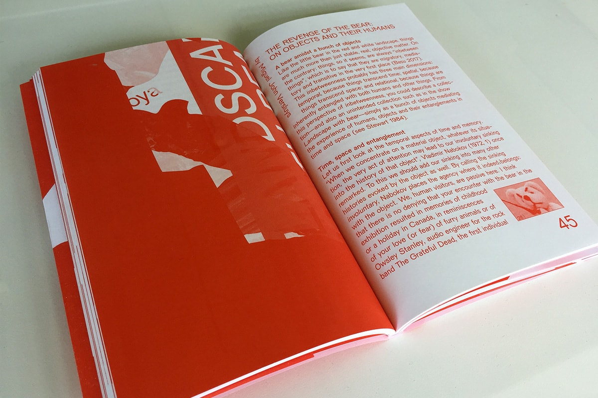

Landscape with Bear
Book
Year
2019
Publisher
De Appel Amsterdam
ISBN 978-9-07-350191-1
The publication documents the making of Landscape with Bear, a project that investigates what has come to be known as De Appel’s Collection (Unintended), an accumulation of objects – artworks, props, leftovers, and unidentified materials – that lies within the institution’s extensive Archive.
This book is one of the outcomes of the project, alongside the exhibition at De Appel and the performative-event at the Stedelijk Museum, which took place in May 2019. Along with the commissioned essays, it registers the group meetings, each of which was documented in various forms: photographs, audio recordings and minutes. Extracts of these materials have been selected and edited to be included in the book in order to reflect on the methodology used.
Every step of the process has been woven into one continuous landscape: the participants’ first face to face encounter with the objects, their initial reactions, first thoughts and desires for this project, mind maps, collective discussions, group work and individual presentations, floorplans, notes and drawings.
With
Nikolay Alutin, Bruno Alves de Almeida, Dita Birkensteina, Alisa Blakeney, Cookies, Sofia Dourron, fanfare (Lotte van de Hoef, Freja Kir), Jan Hüskes, Aram Lee, Aude Mgba, Tamar Shafrir, Miguel John Versluys, Shen Xin
Designed by
fanfare
Public event
OA/AO (onder andere/among others) with Miguel John Versluys
De Appel, 04.07.2019
 
